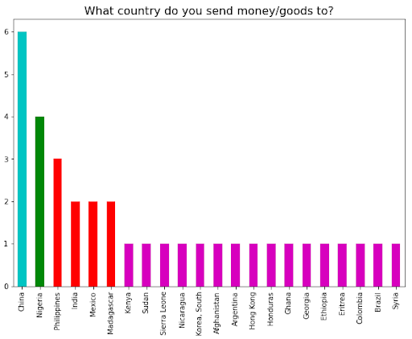
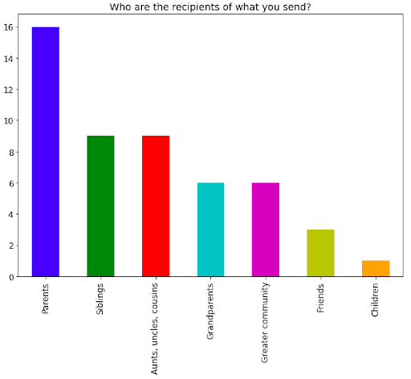
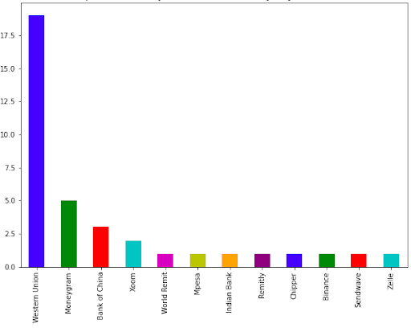
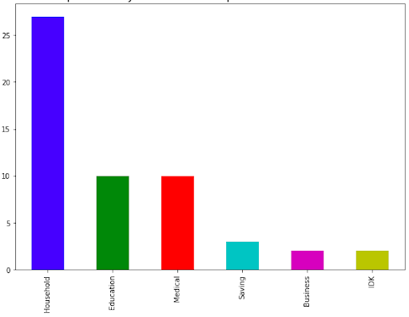
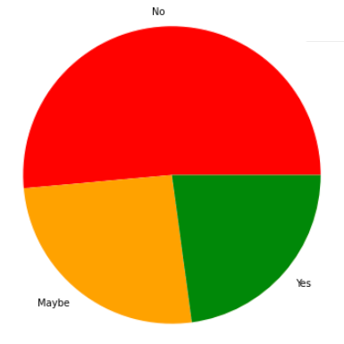
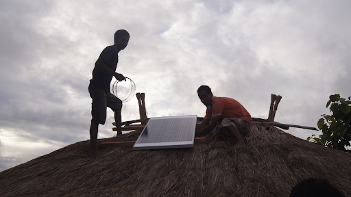

Research Questions
According to our analysis, the United States, Saudi Arabia, and United Arab Emirates are amongst the top 10 remittance senders, which aligns with existing research. It is well- documented that these nations are important parts of the global remittance landscape. In turn, India, China, Mexico, and the Philippines are the top 4 remittance-receiving countries. Current research on the global remittance landscape shows that these countries comprise the world’s top remittance corridors—a term for the sum of remittance flows between two countries. The top remittance corridors are U.S. to Mexico, UAE to India, Hong Kong to China, U.S. to China, U.S. to India, and U.S. to the Philippines. We were not given access to bilateral remittance data from the World Bank, so with our limited view, we sought to further assess the global remittance landscape.
In addition to understanding the global remittance landscape, it was necessary to assess the energy landscape within the selected geographic categories. For this assessment, we aimed to understand the energy gaps in each area, accessibility of sustainable energy, and the current environment of sustainability remittance-focused projects specifically. To understand the global remittance environment and determine the feasibility of sustainability remittance-based aid in achieving the SDGs.
Our assessments of the global remittance landscape and energy needs within key geographies provided insights on the potential intersection between remittance finance and sustainable energy solutions. With this high-level perspective, it was equally important to get an understanding of consumer demand for this type of project. After all, remittances are sent from one party to another. The question became how to encourage both parties to give up some autonomy in order to participate in this kind of initiative. We designed a demand survey targeting remitters and conducted an expert interview in order to gain deeper insights on potential consumer interest.
Remitter Survey
Out of 35 respondents, 33 reported sending money or goods to loved ones in another country.
Remitters were from (and sent money back to):
China (6), Nigeria (4), the Philippines (3), India, Mexico, Madagascar (2 each), Afghanistan, Sudan, Nicaragua, Kenya, Hong Kong, Argentina, Honduras, Ghana, Georgia, Eritrea, Colombia, Brazil, Syria, Sierra Leone, and Syria (1 each). Despite a relatively small sample size, the respondents cover a very broad geographic range.

As for the recipients, respondents primarily sent money/goods to:
Parents (16), siblings (9), aunts, uncles, or cousins (9), grandparents (6), greater community (6), friends (3), and children (1).

In terms of preferred transfer platforms:
A large majority of respondents (19) identified Western Union as one of the platforms they use to send remittances abroad, followed by Moneygram (5), Bank of China (3), Xoom (2), WorldRemit, Mpesa, Indian Bank, Remitly, Chipper, Binance, Sendwave, and Zelle (1 each).
Respondents also shared challenges they experienced with sending remittances:
- Transaction fees
- Varying financial systems
- Lack of trust in existing institutions

In terms of expenses, respondents shared that their loved ones primarily spent remittances on:
Household (27), education (10), medical (10), savings (2), and business (1).
This finding aligns with global research, which purports that remittances are mostly spent on basic necessities such as food, clothing and shelter. Once those needs are satisfied, the remainder is invested in human capital, health and education, or housing.
Middle-income groups tend to utilize their remittances for business expenses, savings, and investments. Respondents here are mostly middle- to high-income earners, but their family members are still using most of the funds to meet their immediate needs.

The final question–and perhaps the most important–asked respondents if they would consider paying directly for clean energy products as opposed to sending cash.
About half of the respondents said No (51.4%), and the other half were roughly split between Yes (22.9%) and Maybe (25.7%).
The green remittances proposal is much more complex than what could be expressed in this brief survey with a relatively small sample size. Still, respondents provided valuable insights into real-life constraints to be considered, as well as potential adaptations that would make the proposal more attractive or feasible.
In addition to the constraints caused by financial institutions mentioned above (ie. wait time, transaction fees, varying systems), respondents also identified cultural and contextual barriers. Tradition runs deep in many societies. People may be hesitant to adopt certain technologies because they are not familiar with them and would prefer their current way of life. For example, some communities are hesitant to adopt clean cooking solutions because they simply prefer cooking over a wood fire to maintain traditional recipes or taste.
Respondents from lower-income countries also stressed that their loved ones’ basic needs for food and shelter must be met first, and this initiative does not seem to be in line with that. As it stands, the proposal may only benefit the middle and upper class. These concerns go hand-in- hand with another issue raised: the general lack of awareness about energy issues in various contexts. Energy access is a basic necessity that can improve people’s lives in countless ways. Green remittance projects must make a stronger connection between energy poverty and quality of life so that people understand what is really at stake and how they can immensely benefit in terms of health, personal finance, community, environment, and more.

GIS mapping becomes quite important to plan where technology is to be installed. Geolocating will be important, so GIS experts would be a useful part of project staff. In remote areas, there has to be buy-in from the community for “last mile” of delivery, as supply chain will not be able to reach remote places. Geolocation using smartphone and/or SMS can help, as well as
What3words, who are working to geocode remote areas.
Shipping goods by sea to importers in-country is relatively achievable. Landlocked countries will be more challenging and take longer, reinforcing the need for regional partners and country-specific partners to establish supply chain.
DHL can courier a single product into the capital city. After that, local networks of providers or delivery companies will be needed to disseminate outwards to other regions. There will need to be significant communication between recipients and delivery drivers, as door-to-door service is not particularly feasible. Drop-off hubs or agreed upon meeting points would be useful.
Research needs to be done to not disrupt local supply chains. It’s important to work hand in hand with local utility providers, for example, so as not to disrupt the market. There are often concerns about equity of distribution and its effects. If one household receives installation of X product, how will other members of the community react? To avoid this, centralized installation is recommended.
Central industrial power at the village or communal level is a win-win. Community members can utilize that power source to outsource to smaller energy units in residences.

<
Photo from Village Infrastructure Angels